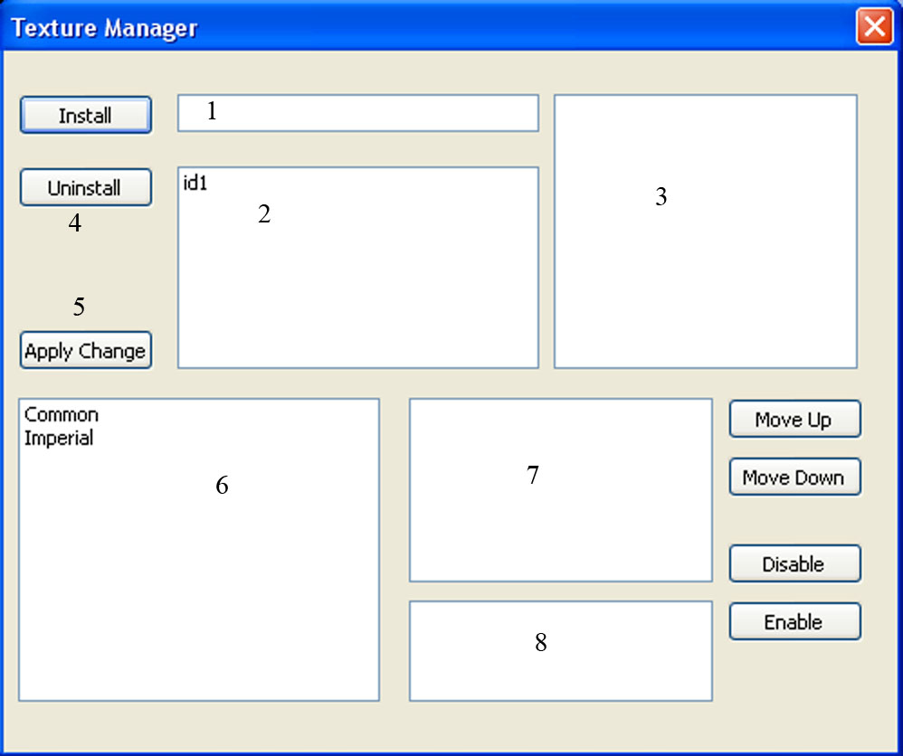

====================================================================
Texture Manger
====================================================================
Name: Texture Manger
Author: Jacob Essex (aka Yacoby)
Version: 0.0.1
Last Updated: 03 Dec 07
====================================================================
LICENSE AND COPYRIGHT
====================================================================
Copyright (c) 2007, Jacob Essex
All rights reserved.
Redistribution and use in source and binary forms, with or without
modification, are permitted provided that the following conditions are met:
* Redistributions of source code must retain the above copyright
notice, this list of conditions and the following disclaimer.
* Redistributions in binary form must reproduce the above copyright
notice, this list of conditions and the following disclaimer in the
documentation and/or other materials provided with the distribution.
THIS SOFTWARE IS PROVIDED BY JACOB ESSEX ``AS IS'' AND ANY
EXPRESS OR IMPLIED WARRANTIES, INCLUDING, BUT NOT LIMITED TO, THE IMPLIED
WARRANTIES OF MERCHANTABILITY AND FITNESS FOR A PARTICULAR PURPOSE ARE
DISCLAIMED. IN NO EVENT SHALL JACOB ESSEX BE LIABLE FOR ANY
DIRECT, INDIRECT, INCIDENTAL, SPECIAL, EXEMPLARY, OR CONSEQUENTIAL DAMAGES
(INCLUDING, BUT NOT LIMITED TO, PROCUREMENT OF SUBSTITUTE GOODS OR SERVICES;
LOSS OF USE, DATA, OR PROFITS; OR BUSINESS INTERRUPTION) HOWEVER CAUSED AND
ON ANY THEORY OF LIABILITY, WHETHER IN CONTRACT, STRICT LIABILITY, OR TORT
(INCLUDING NEGLIGENCE OR OTHERWISE) ARISING IN ANY WAY OUT OF THE USE OF THIS
SOFTWARE, EVEN IF ADVISED OF THE POSSIBILITY OF SUCH DAMAGE.
====================================================================
INTRODUCTION
====================================================================
This program is designed to simplify the use of texure packs. It allows you to install parts of a texture pack
For example, if you had a global texture pack, but only liked the imperial textures, this would allow you
to only install those textures.
====================================================================
KNOWN LIMITATIONS
====================================================================
It eats harddrive space. There is no compression of stored mods.
There is no way to configure the directories other than chaning the source file (~Line 37)
====================================================================
INSTALLATION INSTRUCTIONS
====================================================================
Install Python and wxPython. This was built on version 2.5, I don't know how it runs, nor do I support
other version of Python
Unzip the mod to your Morrowind Directory. Not the data files directory.
You should now have a directory called "Texture Manager" in your Data Files directory
Run either texture_manager.py (program with a console) or texture_manager_nc.pyw (program without a
console)
====================================================================
USING THE SOFTWARE
====================================================================
Installing A Mod:
Install the mod exactly as you would, but put the mod in Texture Manager\Install rather than Data Files
Open Texture Manager, and type in the name of the mod into the box next to the install button
Press Install
Note: You cannot have two mods installed with the same name

Changing the Archtecture file:
The program works out what arcitecture a file comes from using the regex file TM_Data\Data\Regex.ini
Feel free to edit this, and even better send me the changes.
====================================================================
CONTRIBUTORS
====================================================================
Wrye
====================================================================
CONTACT INFORMATION
====================================================================
I welcome your feedback, suggestions and contributions. Contact me
via the Offical Elder Scrolls forum (username: Yacoby) if you have
questions, feedback, code submissions,and bug reports.
====================================================================